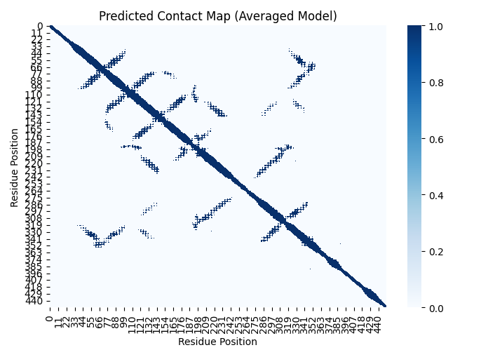
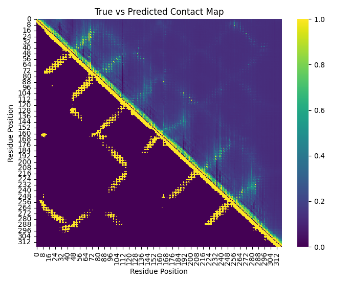
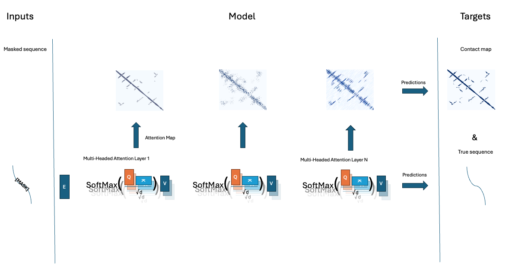

10 Protein contact maps from attention maps
One way to construct a scaffold for protein 3d structure learning is to first learn the distances (2d) between all amino-acids, or between atoms within those amino acids. Contact maps have been extensively used as a simplified representation of protein structures. Contact maps “capture most important features of a protein’s fold, being preferred by a number of researchers for the description and study of protein structures”(Duarte et al. 2010).
A protein’s amino acid sequence is one-dimensional (1D) information – the linear order of residues. The functional three-dimensional (3D) structure is how that chain folds in space, bringing certain residues into contact. Contact maps serve as a two-dimensional (2D) bridge between sequence and structure. A contact map is essentially a matrix that encodes which pairs of residues are close together in the folded 3D structure. Specifically, it’s a binary \(N \times N\) matrix (for an \(N\)-residue protein) where an entry is 1 if two residues are within a distance threshold (e.g. 12 Å) in the 3D structure, and 0 if they are not This 2D representation captures key structural relationships (who-neighbors-whom) without specifying exact coordinates. In protein structure prediction, one common approach is: 1D sequence ⇒ predicted 2D contact map ⇒ inferred 3D structure. The contact map, derived from sequence-based predictions (such as co-evolution analysis or machine learning), provides constraints that guide how the chain can fold. Note however, when converting a full 3D structure into a simplified 2D contact map, some information is inevitably lost. The contact map is a binary (or at best, thresholded distance) representation – it tells us whether a pair of residues is within a certain cutoff distance, but not the exact distance beyond that or their relative orientation. A dramatic illustration is that a protein’s mirror-image (reflected) structure yields an identical contact map, since all pairwise distances are the same. The map alone cannot distinguish a right-handed fold from its left-handed enantiomer – chirality information is lost. Nevertheless, contact maps can serve as relevant information, or constraints when trying to infer 3D structure. Contact maps can act as a powerful but imperfect intermediate blueprint, translating linear sequence information into spatial relationships that approximate the final folded structure. Figure 1 is an example contact map based on a distance threshold of 12 Angstrom between C_a atoms (Carbon atoms that are part of the protein backbone ) in the AlphaFold 2 model of the protein structure (PDB format) of a human GRPC protein.

Below we’ll study how we can estimate contact maps from the self-attention networks, or maps, that are latently encoded in protein language models, based on ideas developed by Roa et al. (Rao et al. 2020) and others(Vig et al. 2020). This is frankly like magic, just by training to predict protein sequences, the model learns the 2D structure of the protein, and because we know 2D structure relates to 3D structure we can prove protein language models learn (elements of) the 3D structure of proteins.
Though to be able to predict contact maps, we need to break open the models we have been training and study what attention is, and what attention maps are. Frankly understanding attention, and I don’t think I really did utill I had to dig in deep to write this chapter, is a key step to understanding what transformer like models are learning.
10.1 What is attention exactly?
Attention can be thought of as a more flexible, learned version of correlation—but one that dynamically changes based on context.
In a traditional correlation or covariance matrix, each entry tells us how strongly two variables (or two positions in a sequence) are related, on average across an entire dataset. If we were studying DNA, for example, a correlation matrix might tell us which nucleotide positions tend to mutate together across many species. However, correlation is static—it does not adapt to the specific sequence we are analyzing at any given moment.
Attention, by contrast, is like a learned, dynamic correlation matrix that changes depending on the sequence it is applied to. Instead of capturing a single, global pattern, it can learn to recognize many different ways in which elements of a sequence relate to one another, depending on context.
For example: - In DNA analysis, attention can learn to recognize when certain nucleotides influence each other in one evolutionary context but not another. - In proteins, attention can capture long-range interactions between amino acids that affect folding, even if they are far apart in the sequence. - In language, attention allows a model to understand that a pronoun like “it” refers to different things in different sentences, based on context.
Mathematically, attention produces an attention map, which is similar to a covariance matrix but is computed on-the-fly for each sequence. This means that instead of assuming a fixed set of relationships, the model can learn multiple different interaction patterns and decide which are relevant based on the input it sees.
10.1.1 Multi-Head Attention: Learning Many Correlation Patterns
A key advantage of multi-headed, multi-layer attention is that it does not learn just one correlation pattern—it learns many at the same time. Multiple parallel attention heads in a transformer layer model act like an independent correlation matrix, capturing different kinds of dependencies. Some heads might focus on local relationships (like adjacent words in a sentence or nearby mutations in DNA), while others capture long-range dependencies (like structural dependencies in proteins or distant but functionally linked words in a text). Moreover, because attention is stacked in series across layers, each layer refines and builds on the patterns learned by previous layers. This allows transformers to discover complex, hierarchical relationships that are impossible to capture with a simple, static correlation matrix.
10.1.2 The core Attention Equation
The fundamental equation of attention in transformer models, the core of each attention head in each layer, is based on computing the relationship between different positions in a sequence through the Query (Q), Key (K), and Value (V) matrices. The attention score is calculated as:
\[\text{Attention}(Q, K, V) = \text{softmax} \left(\frac{Q K^T}{\sqrt{d_k}}\right) V \]
where \((Q)\) represents the queries (which ask for relevant information), \((K)\) represents the keys (which provide relevance scores), and \((V)\) represents the values (the actual content being retrieved). The softmax function ensures that the attention scores sum to 1, effectively acting as a weighting mechanism over the values.
The Query (\(Q\)), Key (\(K\)), and Value (\(V\)) matrices are derived from the input embeddings (\(X\)), which represent tokens in a continuous vector space. The embeddings dimensions are sequences length k by embedding dimensions d. These embeddings are specific to the given sequence, meaning different input sequences will produce different embeddings. The transformation into \(Q\), \(K\), and \(V\) happens through learned weight matrices (\(W_Q\), \(W_K\), \(W_V\)), which remain constant after training but are applied dynamically to the current sequence. Specifically, these transformations are computed as:
\[Q = X W_Q, \quad K = X W_K, \quad V = X W_V\]
Since (\(W_Q\), \(W_K\), \(W_V\)) are learned parameters, they do not change per sequence after training, but the values of \(Q\), \(K\), and \(V\) do change since they depend on the specific embedding (\(X\)) of the input sequence. The input-dependents of \(Q\), \(K\), and \(V\) allows the model to flexibly compute attention maps for different sequences while maintaining a consistent learned transformation process.
10.1.3 Mathematical Link Between Attention and Correlation
Lets expand slightly on the conceptual analogy between attention and “covariance”. The core self-attention mechanism:
\[A = \text{softmax} \left(\frac{QK^T}{\sqrt{d_k}} \right)\]
where:
- ( \(Q = X W_Q\) ), ( \(K = X W_K\) ), and ( \(V = X W_V\) ) are learned transformations of the input ( \(X\) ).
- ( \(A\) ) is the attention map, which determines how much each element in the sequence attends to others.
- The denominator ( \(\sqrt{d_k}\) ) is a scaling factor to stabilize gradients.
The term ( \(QK^T = (X W_Q) (X W_K)^T\) ) computes a similarity measure between elements of ( \(X\) ) after transformation. If ( \(W_Q = W_K\) ), this resembles the covariance matrix of a linear transformation of ( \(X\) ), and \(QK^T\) can be re-written as:
\[QK^T = X W_Q W_K^T X^T\]
This is structurally similar to the sample covariance matrix, where Z is an n people by m variables data matrix:
\[\text{Cov}(Z) = Z^T Z\]
Note the transpose is on the other “end” of the product, but because we are computing the dependenence between a sequences of d tokens (rows of X), whule for covariance we compute the dependencies between m variables (columns of Z). The apperent reversal of the side of the equations that get transposed actually makes sense. There are obvious difference: attention obviously additional learned transformations ( \(W_Q\) ) and ( \(W_K\) ) and its asymmetric (\(W_Q \neq W_Q\)). Thus, the attention map is effectively a learned, context-specific, asymmetric version of dependence, which has analogs to a covariance matrix. Its good to remember we have abstracted away the role of the softmax normalization and the \(V\) matrix in service of illustrating how attention is a little bit like very dynamic context specific, and asymmetric covariance
The global attention map across a model is not a simple sum of all the attention maps from different heads. Instead, h attention heads operate in parallel, each computing a separate attention matrix (\(A_h\)), and their outputs are concatenated and linearly projected rather than summed. However, each individual attention map can often be viewed as a specific conditional relation or dependence in the data.
10.1.4 How Attention is Stacked Across Layers
In a transformer model, attention is not only computed within a single layer but is also stacked sequentially across multiple layers, allowing deeper layers to refine and build upon the representations learned by previous layers.
Heads within a layer operate in parallel: Each attention head captures a different perspective on the input sequence within the same layer. Layers operate in sequence: The output of one layer (which has already been shaped by multiple heads) becomes the input for the next layer. This layer-wise stacking allows transformers to build hierarchical feature representations, capturing complex relationships that simple, shallow models cannot.
10.2 Attention encodes biology
Key interpretable AI work by Roa et al. (Rao et al. 2020) reveal that the attention matrices of sequences based (one dimensional) Protein language models encode the two dimensional structure of proteins, while others have show attention encodes amino-acid substitution probabilities (which in turn relate to the potential deliteriousness of mutations)(Vig et al. 2020). They extract all individual Attention maps, for a given sequence from a Protein language model, and using those to predict the estimated (or experimentally observed) contact maps for the same sequence.
The intuition here is that the attention maps are amino-acid by amino-acid maps of the relation between the bases in a given sequences, which encode what other bases the model attends to at base \(j\), and if the model encodes long range structure (which, spoiler, it does) when if base \(j\) and base \(I\) are far apart in the sequence, but interact and are co-evolving because their close in the proteins 3D structure, we expect some of the attention maps to tend to that interaction/co-evolution. As the model is an unsupervised black box, we obviously don’t know what attention matrices will matter, so we’ll simply use Logistic regression where the outcome is the “gold standard” contact map (in our case for convenience sake AlphaFold2 predictions of the contact map) and the predictors are the attention maps. By running logistic regression on only 4(!!!) genes and using the average coefficients we can predict a very crude outline of the contact map of the 5th gene (See Figure 2).
10.2.1 Grabbing attention (maps)
Fortunately, the attention maps are generally an element we can export from language models using standard libraries like transfomers so we can write a function to extract all attention maps from a protein language model. These will become the predictors (x) in our logistic regression later.
Since the model we trained in Chapter 9 is too small, and a larger model is still in the works (I am running all the compute for this book on my MacBook and an old gaming GPU) we’ll work with "facebook/esm2_t33_650M_UR50D" an advanced PLM developed by Standford and Facebook. This particular version has 20 attention heads and 33 layers, so that’s \(20*30 = 660\) attention maps to use for prediction.
# Load model and tokenizer
model_name = "facebook/esm2_t33_650M_UR50D"
config = AutoConfig.from_pretrained(model_name, output_attentions=True)
model = AutoModelForMaskedLM.from_pretrained(model_name, config=config)
tokenizer = AutoTokenizer.from_pretrained(model_name)
# Function to extract attention matrices
def extract_attention_matrices(sequence):
inputs = tokenizer(sequence, return_tensors='pt')
outputs = model(**inputs)
attentions = outputs.attentions # Tuple (num_layers, batch_size, num_heads, seq_len, seq_len)
stacked_attentions = torch.cat([attn.squeeze(0) for attn in attentions], dim=0)
return stacked_attentions.detach().numpy()Similarly we extract the “true” contact map from a protein sequence structure file (PDB format).
# Function to generate true contact maps from PDB
def generate_contact_map(pdb_filename, chain_id, threshold=12.0):
parser = PDBParser()
structure = parser.get_structure("protein", pdb_filename)
chain = structure[0][chain_id]
residues = [res for res in chain if "CA" in res] # Ensure we only use residues with CA atoms
seq_len = len(residues)
dist_matrix = np.zeros((seq_len, seq_len))
for i, res_one in enumerate(residues):
for j, res_two in enumerate(residues):
diff_vector = res_one["CA"].coord - res_two["CA"].coord
dist_matrix[i, j] = np.sqrt(np.sum(diff_vector * diff_vector))
contact_map = dist_matrix < threshold
return contact_map.astype(int)Then we’ll use logistic regression to predict the contact map from the attention maps, to stabilizes the estimates we’ll do so for 4 genes and average the coefficients. To get an optimal estimate you might use up to 20, 30 or 40 genes here but its interesting to see this actually kind of works with as little as four genes.
for seq, pdb in zip(sequences[:3], pdb_filenames[:3]):
true_contact_map = generate_contact_map(pdb, chain_id)
attention_matrices = extract_attention_matrices(seq)
# Prepare features
seq_len = true_contact_map.shape[0]
X = np.zeros((seq_len * (seq_len - 1) // 2, attention_matrices.shape[0]))
y = np.zeros((seq_len * (seq_len - 1) // 2,))
index = 0
for i in range(seq_len):
for j in range(i + 1, seq_len):
feature_vector = attention_matrices[:, i, j]
if j - i >= 1: # Ignore near-diagonal contacts
X[index] = feature_vector
y[index] = true_contact_map[i, j]
index += 1
# Train logistic regression model
clf = LogisticRegression()
clf.fit(X, y)
# Store learned coefficients
all_coefs.append(clf.coef_)
all_intercepts.append(clf.intercept_)
# Compute the average coefficients
avg_coefs = np.mean(np.array(all_coefs), axis=0)
avg_intercept = np.mean(np.array(all_intercepts), axis=0)10.2.2 Results
Based on the very limited regression model we can predict the hazy outline of the “contact” map (Figure 2).

I cant emphasize enough this is just an illustration and not an actual academic analysis/prediction, obviously a fuller implementation as done in (Rao et al. 2020) is. The full process of this chapter is outlined in Figure 3, parallel attention heads, across sequential layers, ensure proteins structure can be predicted. We then attention maps form the model, and use those to predict the protein contact map. Currently the prediction of the contacts, and the masked sequence elements are seperate processes, but in many deep learning models in general, and protein language models in specific, those prediction tasks are fused into one single model.

10.3 Exercises
If you want a good Masters/PhD term project with limited compute demands, or you prefer to do self-study trough coding 9Icertainly do), try improving/modeling contact maps. There are some obvious pieces of low hanging fruit here, for example why are we predicting threshold distances for example? whouldn’t it be better to predict distance directly? That would retain additional information form the contact maps. Why are we using these ad-hoc data I just copy pasted from UniProt/AF2? We’d probably gain from using a standardized dataset, proteinnet (AlQuraishi 2019) for example contains sequences and 3d structure of CASP7/8/9/1011 and 12 datasets in a format amenable to analysis. The exercises below motivate you to think about optimizing parts of the process outlined in Figure 3, and, if you are up for it, trying to capture the entire process into a single model.
In sequence from beginner to advanced project consider these exercises:
1. (easy) Build a predictor across 100 genes, use ridge or lasso regression to improve on the effectiveness of the prediction. Evaluate whether predicting continuous distances results in better prediction results.
2. (medium) Why aren’t we doing ML in the prediction step? Train an actual tabular/regression model or adapter across a few thousand genes with very good experimental structure data to squeeze all the juice out of the attention matrices. You can consider whether sing experimentally validated protein structures improves the model.
3. (hard) Finetune a medium size PLM on a joint masked language model loss, and contact map prediction loss based on the attention maps, jointly optimizing the model as a PLM and a contact map prediction model. Youd have to grab a pre-trained PLM (say: facebook/esm2_t30_150M_UR50D on huggingface) add code to 1. produce the attention maps during the model’s forward pass, related the attention maps (non-linearly) to the observed distances using MSE loss (of cross entropy if you keep the contact map dichotomous), and finetune the model on the combined loss: \(\alpha * MSEloss + \beta * MLMLoss\) YOu’d likely have to do some evaluating of optimal values alpha ans beta. You’d be training a model that concurrently is a great masked protein language model and optimizes the attention matrices such that their maps become an optimal predictor of the molecular distances in the protein.
If you make it to the hard exercise, you are essentially training a “adapter” to fit on top of your PLM. This is common practice in machine learning with language models, add parts to an existing model, either freezing the exciting model in place, or letting it optimize along with he adapter, to excel at a specific task. One of the best performing protein folding PLMs, ESMfold(Lin et al. 2023a), is such an adapter, though that adapter is more sophisticated then the one you’d train here.
10.4 The wonder of attention, and beyond
The best summary of the amazing properties of attention I came across was in Poli et al.(Poli et al. 2023). They,summarize years of mechanistic studies that abstract the essential features in attention that make it so highly effective at token sequence learning.
- Attention is highly expressive, responsive to, and controlled by, the input data. It can see a new sequence, and from its training abstract (imperfectly) the interactions and relations between elements in that sequence.
- While the model size (in terms of # parameters) scales with sequences length, the parameter size of the attention weight matrices themselves do not! The weight matrices (\(W_Q\), \(W_K\), \(W_V\)) are of dimension embedding size, by key/query/value vector length.
- While models have a set (or computationally limited) context size, the attention mechanism itself does not! Regardles of the token lenght dimension of X, the products (\(Q = X W_Q\) ), ( \(K = X W_K\) ), and ( \(V = X W_V\) ) can be compute. Attention weights can attended to any pair of tokens regardless of their (relative) position. Though smart types of positional embedding are required to effectively capitalize on this aspect of attentions (i.e. effectively the degree to which attention scales beyond the sequence length seen during training is modest).
These amazing features come at a cost, the computational cost of attention scale quadratically with the length of the sequence (as \(X\) “grows” so do \(Q\),\(K\),\(V\)). Chasing sub-quadratic alternatives to attention, with the “hyena operator” being a current favorite(Nguyen et al. 2023). These alternatives may not always produce explicit “attention maps” and so peopel have developed alternate strategies to extract contact maps and proteins structure information from PLMs(Zhang et al. 2024).
10.5 Conclussion
So what did we learn here? we learned that within the unsupervised PLM, which is trained on 1-D sequences, we uncover “knowledge” of 2D protein structure. What I did here is by no means an optimal protein contact prediction but others have build on this idea and done so successfully(Lin et al. 2023b). In the next chapter we’ll discuss how we can append models onto PLMs first to predict 2D contact maps, and then to go above and beyond and predict 3D protein structure.